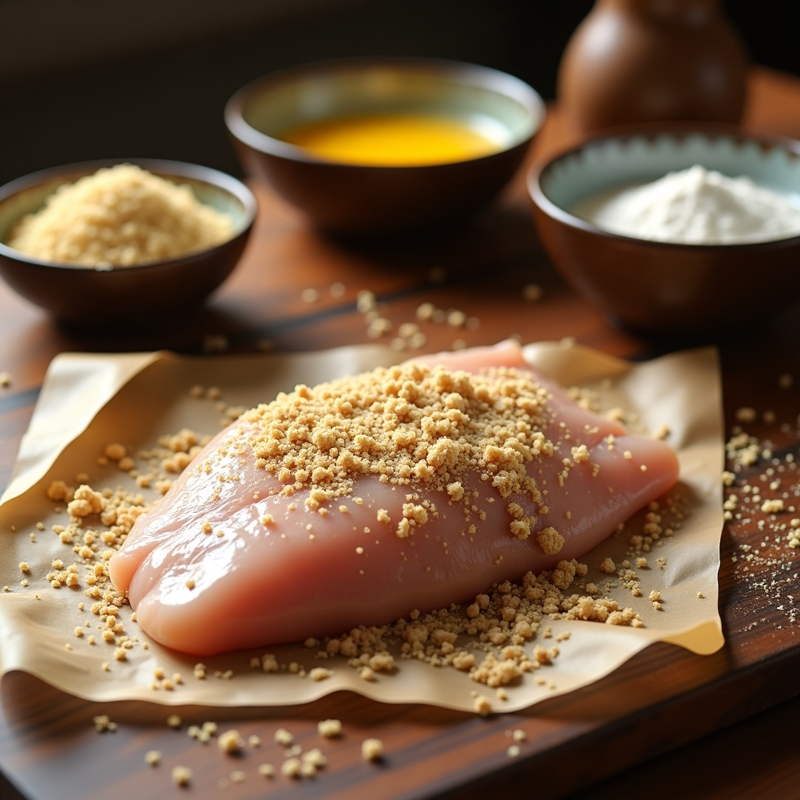
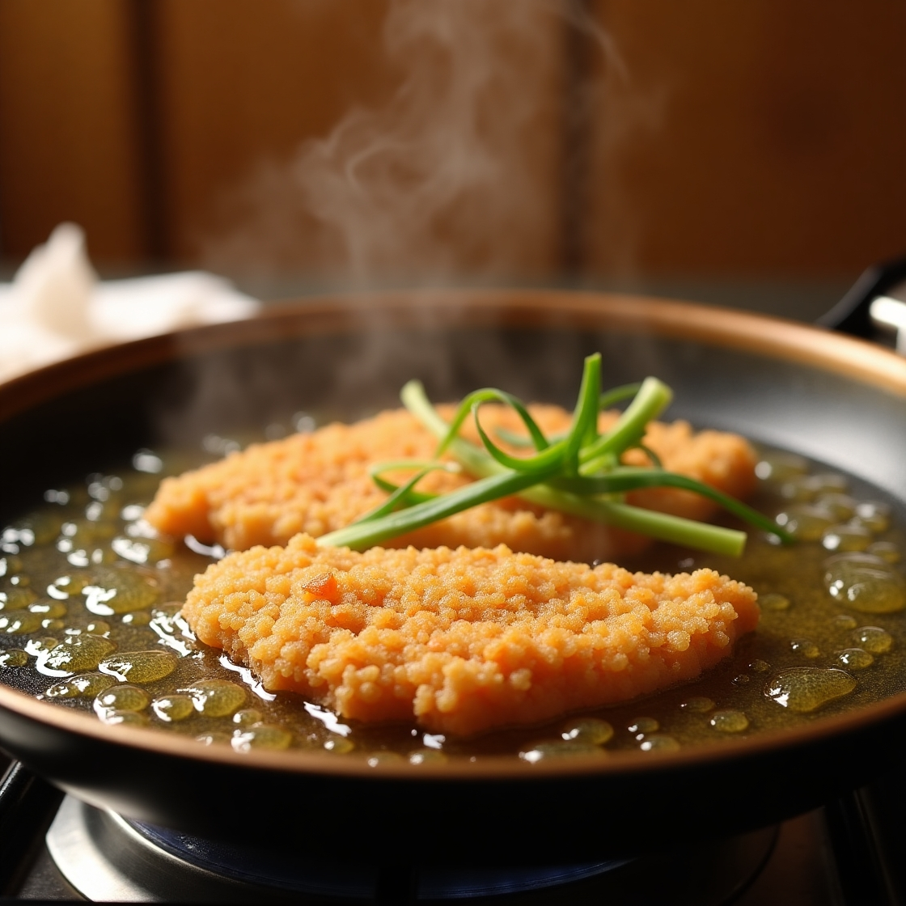
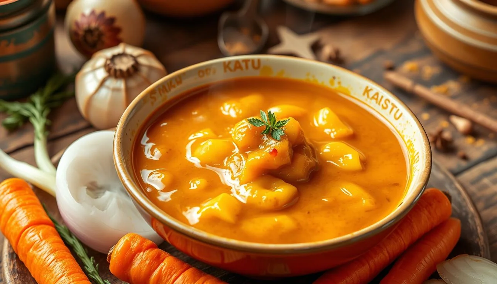
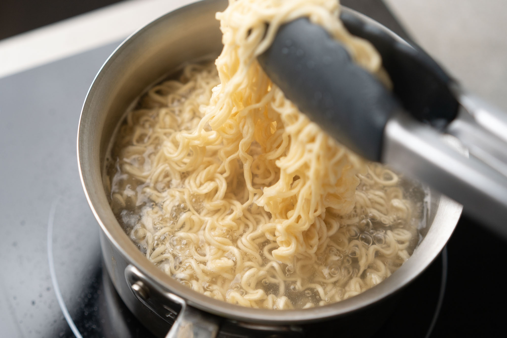
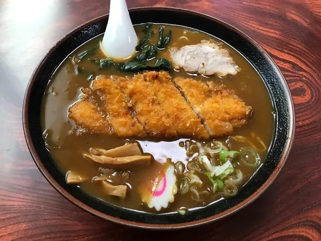

Katsu Curry Ramen

Katsu Curry Ramen is a fusion dish combining the rich, savory flavors of Japanese katsu curry with the comforting warmth of ramen. It features a bowl of ramen noodles served in a flavorful Japanese curry broth, which is thick, aromatic, and slightly sweet with a hint of spice. The dish is topped with a crispy, golden-brown breaded cutlet—usually pork (tonkatsu) or chicken (chicken katsu)—which adds a crunchy texture that contrasts beautifully with the silky noodles and broth. Common garnishes include green onions, soft-boiled eggs, pickled ginger, and sometimes a drizzle of chili oil for extra depth. It’s a hearty, indulgent dish perfect for those who love both ramen and Japanese curry.
📌 Ingredients:
For the Katsu Chicken:
- 2 boneless chicken breasts
- Salt & pepper (to taste)
- ½ cup all-purpose flour
- 1 egg (beaten)
- 1 cup panko breadcrumbs
- Oil (for frying)
For the Curry Broth:
- 1 tbsp vegetable oil
- 1 small onion (chopped)
- 2 cloves garlic (minced)
- 1-inch ginger (grated)
- 1 tbsp curry powder
- ½ tsp turmeric
- 1 tbsp soy sauce
- 1 tbsp mirin
- 3 cups chicken broth
- 1 tbsp cornstarch (mixed with 2 tbsp water)
For the Ramen:
- 2 packs ramen noodles
- 1 boiled egg (halved)
- ½ cup green onions (chopped)
- ½ cup corn (optional)
👨🍳 Directions:
Step 1: Prepare the Chicken Katsu
- Pound the chicken breast to an even thickness.
- Season with salt & pepper.
- Coat with flour, dip in beaten egg, and cover with panko breadcrumbs.

Step 2: Fry the Chicken Katsu
- Heat oil in a pan over medium heat.
- Fry chicken until golden brown (about 4-5 minutes per side).
- Remove and drain on paper towels.

Step 3: Make the Curry Broth
- In a pot, heat oil and sauté onions until soft.
- Add garlic, ginger, curry powder, and turmeric. Stir for 1 minute.
- Pour in chicken broth, soy sauce, and mirin. Simmer for 5 minutes.
- Add cornstarch slurry to thicken.

Step 4: Cook the Ramen Noodles
- Boil ramen noodles as per package instructions.
- Drain and set aside.

Step 5: Assemble the Ramen Bowl
- Pour the curry broth into a bowl.
- Add cooked ramen noodles.
- Slice the fried chicken and place on top.
- Garnish with green onions, corn, and a boiled egg.
